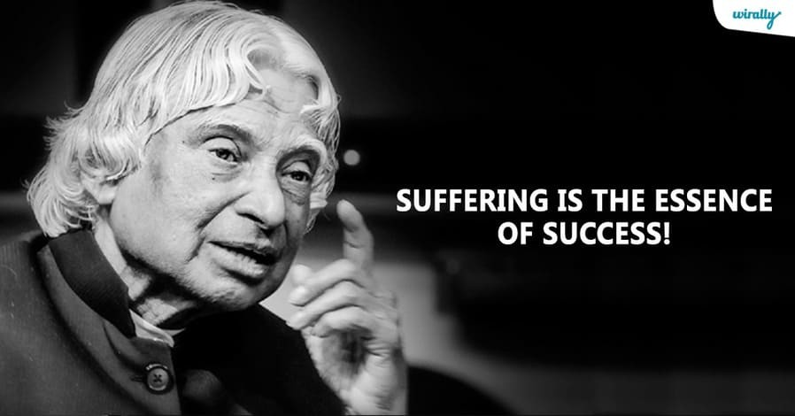

Dr. A.P.J. Abdul Kalam
The Missile Man of India

Dr. A.P.J. Abdul Kalam, center, explains rocketry and space technology to young scientists—part of his life-long dedication to India's self-reliance in space and defense.
Here's a timeline of Dr. Kalam's life:
- 1931 - Born in Rameswaram, Tamil Nadu, in a humble Muslim family. His father was a boat owner and imam of a local mosque.
- 1950 - Graduates in Physics from St. Joseph's College, Tiruchirappalli. Later moves to Madras to study aerospace engineering at the Madras Institute of Technology (MIT).
- 1960 - Joins the Aeronautical Development Establishment of the Defense Research and Development Organisation (DRDO). His early project involves developing a hovercraft.
- 1969 - Transferred to the Indian Space Research Organisation (ISRO) as project director of India's first satellite launch vehicle (SLV-III), which successfully deployed the Rohini satellite in 1980.
- 1970s-1980s - Works closely with Dr. Vikram Sarabhai and later Satish Dhawan to advance India's space ambitions. Develops the SLV-III and becomes an integral part of the Indian satellite and missile programs.
- 1982 - Returns to DRDO as the director and leads India's Integrated Guided Missile Development Program (IGMDP). This earns him the nickname “Missile Man” for his work on missiles like Agni, Prithvi, and Akash.
- 1998 - Plays a pivotal role in India's successful nuclear tests at Pokhran-II, making India a full-fledged nuclear power.
- 1999-2001 - Serves as Principal Scientific Adviser to the Government of India.
- 2002 - Elected as the 11th President of India. During his tenure, he becomes known as the "People's President" due to his humble demeanor and focus on youth empowerment.
- 2007 - Completes his term as President and returns to education, teaching, and mentoring students across the country. Continues his role as an inspirational figure for young people, advocating for education, science, and leadership.
- 2012 - Publishes "Turning Points," a continuation of his autobiography "Wings of Fire."
- 2015 - Passes away while delivering a lecture at the Indian Institute of Management (IIM), Shillong. He collapses on stage, and despite efforts to revive him, he dies of cardiac arrest.
"If you want to shine like a sun, first burn like a sun."
--Former President of India Dr. A.P.J. Abdul Kalam
If you have time, you should read more about this incredible human being on his 